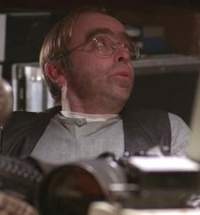

Melvin Frohike (played by Tom Braidwood) was one of the "Lone Gunmen" with Richard Langly and John Fitzgerald Byers who printed out "The Lone Gunman" newspaper and often helped Mulder solve cases with their numerous skills and contacts. When he first meet Scully, he described her as both "hot" and "tasty."
Frohike's attraction to Scully, however, was less hormonal than it appeared at first. When she was in the hospital following her abduction, Frohike showed up in a suit and tie with flowers for her.
Frohike and Langly helped Mulder break into the Lombard Research Facility while seeking a way to help with Scully's cancer.
